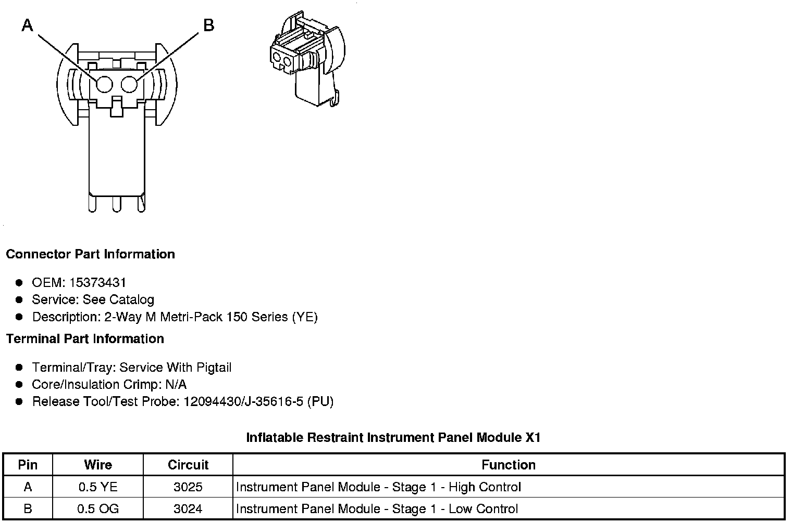
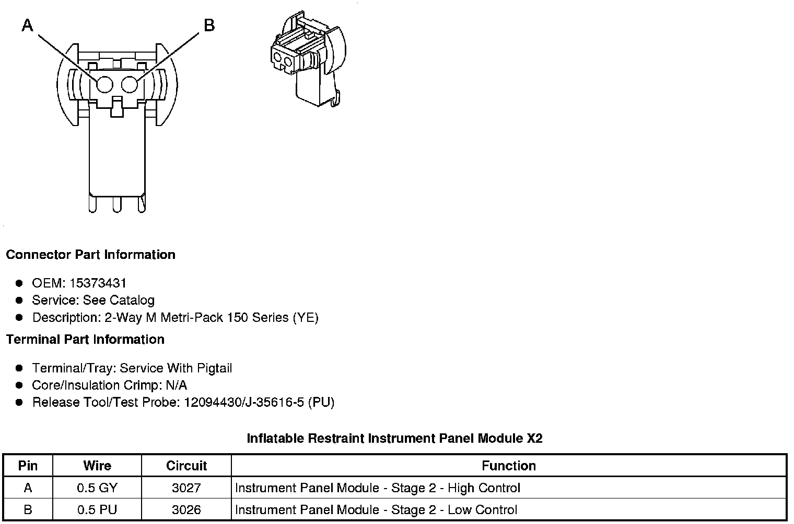
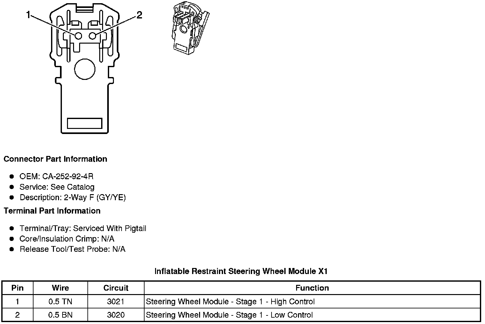
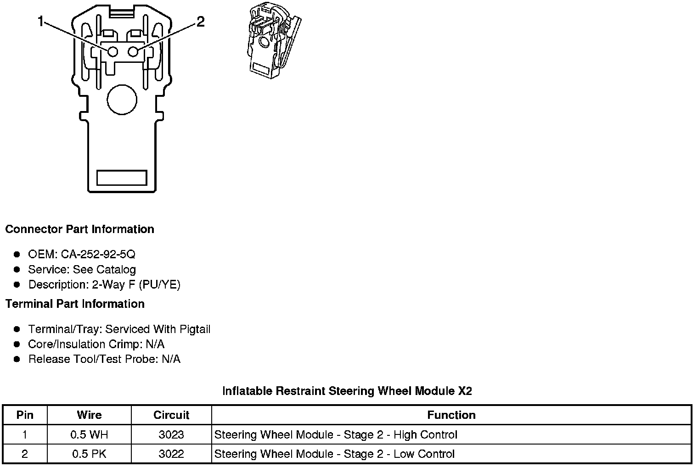
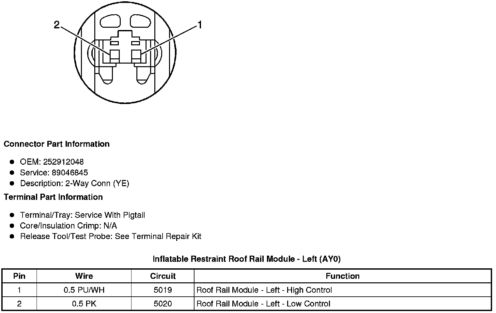
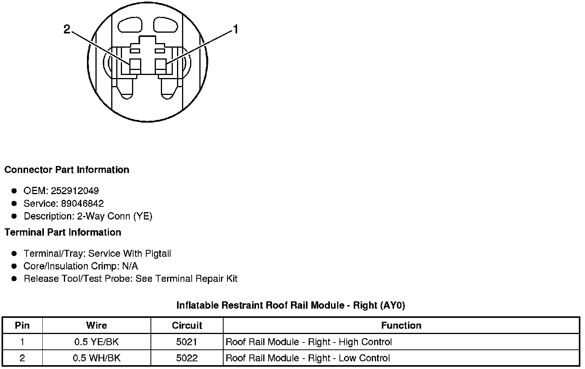

Air Bag: Diagrams
Component Connector End Views
Inflatable Restraint Instrument Panel Module X1

Inflatable Restraint Instrument Panel Module X2

Inflatable Restraint Steering Wheel Module X1

Inflatable Restraint Steering Wheel Module X2

Inflatable Restraint Roof Rail Module - Left (AY0)

Inflatable Restraint Roof Rail Module - Right (AY0)
